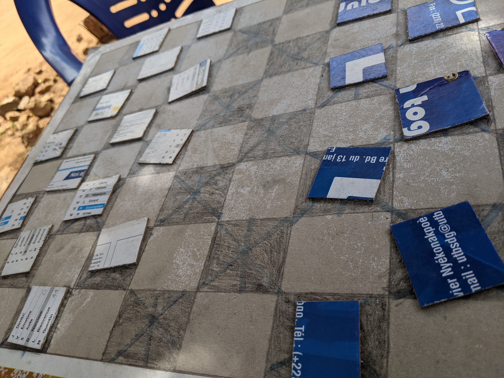
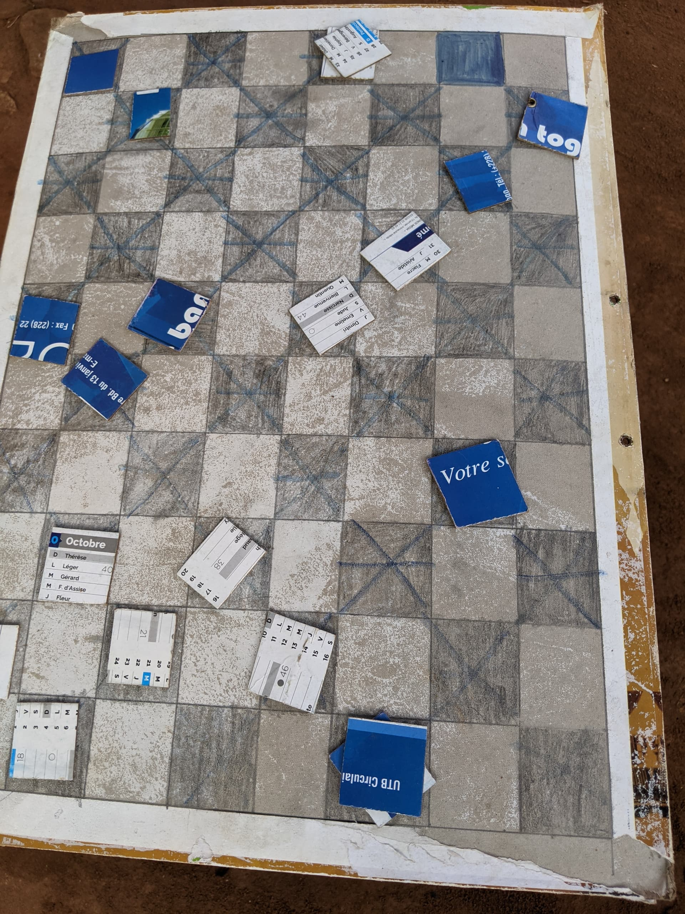

<!DOCTYPE html>
<html lang="fr">
    <head>
        <meta charset="UTF-8">
        <title>
            Présentation du jeu
        </title>
    </head>
</html>
<body>
    <header>
        <h1><strong>BIENVENU SUR LA PAGE DE PRESENTATION DU JEU DE DAMES </strong></h1>
        <h4>
              <a href="Acceuil.html">Acceuil</a></br>
              <a href="Présentation du jeu.html">Présentation du jeu</a></br>
              <a href="Les règles du jeu.html">Les règles du jeu</a></br>
             <a href="Les avantage du jeu.html">Les avantages du jeu</a></br>
        </h4>
        <h2>PRESENTATION DU JEU DE DAMES</h2>
        <h4>
         </header>
         <p>
            Dames internationaux se joue sur un plateau (damier) de 10x10 avec 20 pions ou pièces de chaque côté. Les pions (les pièces) sans couronne déplacer d'un espace en diagonale avant, mais elle peut capturer en diagonale vers l'avant ou vers l'arrière. Il est obligatoire de prendre (capturer) autant de pièces que possible. Dam ou Kings peuvent se déplacer à un certain nombre de carrés.
         </p>
        <p>
            
        </p>
         <h3>NB</h3>
         <p>
            On parle de King ou dam quand parvient à rentrer et occupé l'un des principal case de l'adversaire. King = deux pions.On peu le constater sur l'image ci-déssous.
         </p>
         <p>
            
        </p>
        <p>
            Voulez-vous accéder à la page <a href="Les règles du jeu.html">Présentation du jeu?</a></br>
        </p>
</body>
</html>